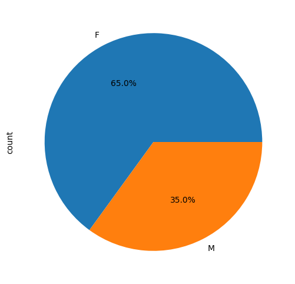
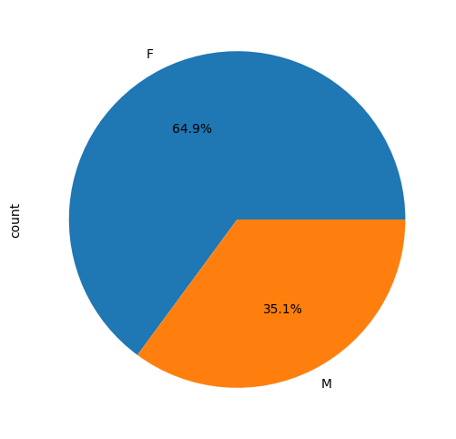
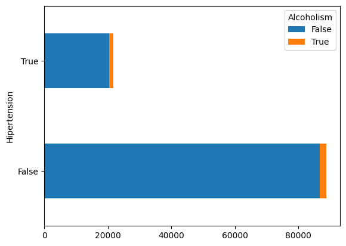
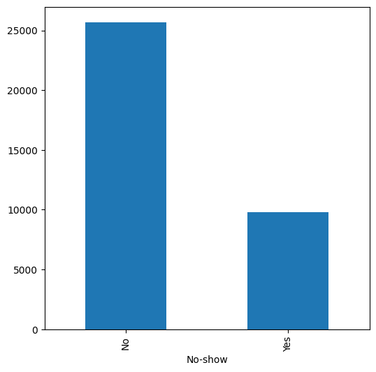
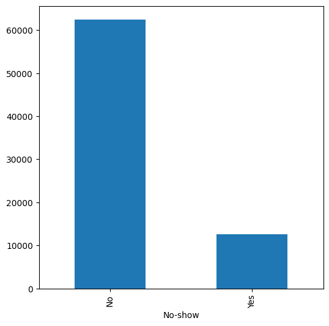
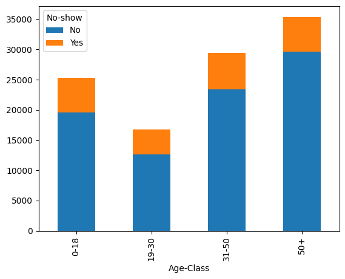

#Project Investigate a Dataset - [Medical Appointment No Shows]
##Table Of Contents
##Introduction
The Medical Appointment No-Shows dataset contains records of medical appointments in Brazil. It aims to address the question of why patients fail to attend their scheduled appointments. The dataset includes 14 features for analysis to help understand the factors influencing no-shows.
# Import the important libraries for the data analysis
import numpy as np
import pandas as pd
df = pd.read_csv('KaggleV2-May-2016.csv') # Read an CSV file
df.head() # Print the first 5 rows of the dataset| PatientId | AppointmentID | Gender | ScheduledDay | AppointmentDay | Age | Neighbourhood | Scholarship | Hipertension | Diabetes | Alcoholism | Handcap | SMS_received | No-show | |
|---|---|---|---|---|---|---|---|---|---|---|---|---|---|---|
| 0 | 2.987250e+13 | 5642903 | F | 2016-04-29T18:38:08Z | 2016-04-29T00:00:00Z | 62 | JARDIM DA PENHA | 0 | 1 | 0 | 0 | 0 | 0 | No |
| 1 | 5.589978e+14 | 5642503 | M | 2016-04-29T16:08:27Z | 2016-04-29T00:00:00Z | 56 | JARDIM DA PENHA | 0 | 0 | 0 | 0 | 0 | 0 | No |
| 2 | 4.262962e+12 | 5642549 | F | 2016-04-29T16:19:04Z | 2016-04-29T00:00:00Z | 62 | MATA DA PRAIA | 0 | 0 | 0 | 0 | 0 | 0 | No |
| 3 | 8.679512e+11 | 5642828 | F | 2016-04-29T17:29:31Z | 2016-04-29T00:00:00Z | 8 | PONTAL DE CAMBURI | 0 | 0 | 0 | 0 | 0 | 0 | No |
| 4 | 8.841186e+12 | 5642494 | F | 2016-04-29T16:07:23Z | 2016-04-29T00:00:00Z | 56 | JARDIM DA PENHA | 0 | 1 | 1 | 0 | 0 | 0 | No |
This dataset consists of 110,527 records and 14 features, as described earlier. The data types are distributed as follows:
int64) features:
AppointmentID, Age, Scholarship,
Hypertension, Diabetes,
Alcoholism, Handicap, and
SMS_received.float64) feature:
PatientID.object) features:
Gender, ScheduledDay,
AppointmentDay, Neighbourhood, and
No-show.Additionally, the dataset contains no missing values and occupies approximately 11.8 MB of memory.
df.info()<class 'pandas.core.frame.DataFrame'>
RangeIndex: 110527 entries, 0 to 110526
Data columns (total 14 columns):
# Column Non-Null Count Dtype
--- ------ -------------- -----
0 PatientId 110527 non-null float64
1 AppointmentID 110527 non-null int64
2 Gender 110527 non-null object
3 ScheduledDay 110527 non-null object
4 AppointmentDay 110527 non-null object
5 Age 110527 non-null int64
6 Neighbourhood 110527 non-null object
7 Scholarship 110527 non-null int64
8 Hipertension 110527 non-null int64
9 Diabetes 110527 non-null int64
10 Alcoholism 110527 non-null int64
11 Handcap 110527 non-null int64
12 SMS_received 110527 non-null int64
13 No-show 110527 non-null object
dtypes: float64(1), int64(8), object(5)
memory usage: 11.8+ MB
As mentioned, ScheduledDay and
AppointmentDay are recognized as strings instead of
datetime objects, so they need to be converted to their correct data
type for accurate analysis.
Additionally, most of the data types used are unnecessarily
large, and we can downcast them to smaller types (e.g.,
int8 instead of int64) to reduce memory
consumption.
Moreover, PatientID and AppointmentID,
which are stored as float64, take up significant memory but
are not useful for our analysis. Removing these columns further
optimizes memory usage.
After applying these conversions and improvements, the dataset's total memory usage is reduced from 11.8 MB to 5 MB, making it more efficient for processing.
describe() method, an issue was identified
where a patient's age was recorded as -1, which is not
valid. To ensure data integrity, this record was removed from the
dataset.# Convert the date attributes to their corret data type
df.ScheduledDay = pd.to_datetime(df['ScheduledDay'])
df.AppointmentDay = pd.to_datetime(df['AppointmentDay'])
df.info()<class 'pandas.core.frame.DataFrame'>
RangeIndex: 110527 entries, 0 to 110526
Data columns (total 14 columns):
# Column Non-Null Count Dtype
--- ------ -------------- -----
0 PatientId 110527 non-null float64
1 AppointmentID 110527 non-null int64
2 Gender 110527 non-null object
3 ScheduledDay 110527 non-null datetime64[ns, UTC]
4 AppointmentDay 110527 non-null datetime64[ns, UTC]
5 Age 110527 non-null int64
6 Neighbourhood 110527 non-null object
7 Scholarship 110527 non-null int64
8 Hipertension 110527 non-null int64
9 Diabetes 110527 non-null int64
10 Alcoholism 110527 non-null int64
11 Handcap 110527 non-null int64
12 SMS_received 110527 non-null int64
13 No-show 110527 non-null object
dtypes: datetime64[ns, UTC](2), float64(1), int64(8), object(3)
memory usage: 11.8+ MB
# Optimize the dataset
df['Age'] = df['Age'].astype("int8")
df['Scholarship'] = df['Scholarship'].astype("bool")
df['Hipertension'] = df['Hipertension'].astype("bool")
df['Alcoholism'] = df['Alcoholism'].astype("bool")
df['Handcap'] = df['Handcap'].astype("bool")
df['SMS_received'] = df['SMS_received'].astype("bool")
df['Diabetes'] = df['Diabetes'].astype("bool")
df.info()<class 'pandas.core.frame.DataFrame'>
RangeIndex: 110527 entries, 0 to 110526
Data columns (total 14 columns):
# Column Non-Null Count Dtype
--- ------ -------------- -----
0 PatientId 110527 non-null float64
1 AppointmentID 110527 non-null int64
2 Gender 110527 non-null object
3 ScheduledDay 110527 non-null datetime64[ns, UTC]
4 AppointmentDay 110527 non-null datetime64[ns, UTC]
5 Age 110527 non-null int8
6 Neighbourhood 110527 non-null object
7 Scholarship 110527 non-null bool
8 Hipertension 110527 non-null bool
9 Diabetes 110527 non-null bool
10 Alcoholism 110527 non-null bool
11 Handcap 110527 non-null bool
12 SMS_received 110527 non-null bool
13 No-show 110527 non-null object
dtypes: bool(6), datetime64[ns, UTC](2), float64(1), int64(1), int8(1), object(3)
memory usage: 6.6+ MB
df.drop(['PatientId', 'AppointmentID'], axis=1, inplace=True) # Delete unnecessary columns
df.info()<class 'pandas.core.frame.DataFrame'>
RangeIndex: 110527 entries, 0 to 110526
Data columns (total 12 columns):
# Column Non-Null Count Dtype
--- ------ -------------- -----
0 Gender 110527 non-null object
1 ScheduledDay 110527 non-null datetime64[ns, UTC]
2 AppointmentDay 110527 non-null datetime64[ns, UTC]
3 Age 110527 non-null int8
4 Neighbourhood 110527 non-null object
5 Scholarship 110527 non-null bool
6 Hipertension 110527 non-null bool
7 Diabetes 110527 non-null bool
8 Alcoholism 110527 non-null bool
9 Handcap 110527 non-null bool
10 SMS_received 110527 non-null bool
11 No-show 110527 non-null object
dtypes: bool(6), datetime64[ns, UTC](2), int8(1), object(3)
memory usage: 5.0+ MB
df.describe()| Age | |
|---|---|
| count | 110527.000000 |
| mean | 37.088874 |
| std | 23.110205 |
| min | -1.000000 |
| 25% | 18.000000 |
| 50% | 37.000000 |
| 75% | 55.000000 |
| max | 115.000000 |
df.drop(df[df["Age"] == -1].index, inplace=True) # Delete the paitent with -1 age.
df.describe()| Age | |
|---|---|
| count | 110526.000000 |
| mean | 37.089219 |
| std | 23.110026 |
| min | 0.000000 |
| 25% | 18.000000 |
| 50% | 37.000000 |
| 75% | 55.000000 |
| max | 115.000000 |
Exploratory Data Analysis (EDA) on Medical Appointment No-Shows
The dataset used in this analysis contains medical appointment records from Brazil, aiming to understand the factors influencing whether patients show up for their appointments. The dataset consists of 110,527 records and 14 features, including patient information such as age, gender, health conditions (e.g., hypertension, alcoholism), and appointment details like the scheduled and appointment days, SMS reminders, and more.
During the analysis, we explore key questions such as:
We also perform necessary data cleaning and optimizations, including handling missing values, converting data types for better memory usage, and identifying and removing anomalies, such as invalid age entries.
The insights gained from this analysis aim to provide a deeper understanding of patient behavior and the factors that influence appointment attendance, which can be valuable for improving healthcare services and patient management.
def plotPie(df,feature):
df[feature].value_counts().plot(kind="pie", autopct='%1.1f%%', figsize=(6, 6))plotPie(df,"Gender") # To know the total precentage of each group
showedUp = df[df['No-show'] == 'No'] # filter based on who attend to the appo
showedUp.head()| Gender | ScheduledDay | AppointmentDay | Age | Neighbourhood | Scholarship | Hipertension | Diabetes | Alcoholism | Handcap | SMS_received | No-show | |
|---|---|---|---|---|---|---|---|---|---|---|---|---|
| 0 | F | 2016-04-29 18:38:08+00:00 | 2016-04-29 00:00:00+00:00 | 62 | JARDIM DA PENHA | False | True | False | False | False | False | No |
| 1 | M | 2016-04-29 16:08:27+00:00 | 2016-04-29 00:00:00+00:00 | 56 | JARDIM DA PENHA | False | False | False | False | False | False | No |
| 2 | F | 2016-04-29 16:19:04+00:00 | 2016-04-29 00:00:00+00:00 | 62 | MATA DA PRAIA | False | False | False | False | False | False | No |
| 3 | F | 2016-04-29 17:29:31+00:00 | 2016-04-29 00:00:00+00:00 | 8 | PONTAL DE CAMBURI | False | False | False | False | False | False | No |
| 4 | F | 2016-04-29 16:07:23+00:00 | 2016-04-29 00:00:00+00:00 | 56 | JARDIM DA PENHA | False | True | True | False | False | False | No |
showedUp["Gender"].value_counts()| count | |
|---|---|
| Gender | |
| F | 57245 |
| M | 30962 |
plotPie(showedUp,"Gender")
As shown in the two figures above, 65% of patients who booked an appointment were female, while only 35% were male. This indicates that females are more likely to schedule medical appointments.
Additionally, approximately 65% of females attended their appointments, whereas only 35% of males showed up. This suggests that females tend to be more committed to attending their medical appointments compared to males.
df.groupby('Hipertension')['Alcoholism'].value_counts()| count | ||
|---|---|---|
| Hipertension | Alcoholism | |
| False | False | 86692 |
| True | 2033 | |
| True | False | 20474 |
| True | 1327 |
df.groupby(['Hipertension', 'Alcoholism']).size().unstack().plot(kind='barh', stacked=True)<Axes: ylabel='Hipertension'>
To assess the relationship between Alcoholism and Hypertension, we grouped the dataset by Hypertension and counted the number of patients with Alcoholism in each category (hypertensive vs. non-hypertensive).
Both the numerical results and the graphical representation show no clear indication of a relationship between these two features. This suggests that having Alcoholism does not significantly impact whether a patient has Hypertension based on the given dataset.
receiviedMsg = df[df.SMS_received == True]
notReceiviedMsg = df[df.SMS_received == False]receiviedMsg['No-show'].value_counts()| count | |
|---|---|
| No-show | |
| No | 25698 |
| Yes | 9784 |
receiviedMsg['No-show'].value_counts().plot(kind="bar",figsize=(6, 6))<Axes: xlabel='No-show'>
notReceiviedMsg['No-show'].value_counts()| count | |
|---|---|
| No-show | |
| No | 62509 |
| Yes | 12535 |
notReceiviedMsg['No-show'].value_counts().plot(kind="bar",figsize=(6, 6))<Axes: xlabel='No-show'>
The comparison between appointment attendance and receiving an SMS reminder does not show a clear relationship between receiving a message and attending the appointment.
As seen in the data:
This suggests that receiving a reminder message does not significantly influence a patient’s decision to attend their appointment, at least based on the given dataset.
df['Age-Class'] = pd.cut(df['Age'], bins=[0, 18, 30, 50, 200], labels=['0-18', '19-30', '31-50', '50+'])df.groupby('Age-Class')['No-show'].value_counts()<ipython-input-20-e3eed74a1c61>:1: FutureWarning: The default of observed=False is deprecated and will be changed to True in a future version of pandas. Pass observed=False to retain current behavior or observed=True to adopt the future default and silence this warning.
df.groupby('Age-Class')['No-show'].value_counts()
| count | ||
|---|---|---|
| Age-Class | No-show | |
| 0-18 | No | 19619 |
| Yes | 5708 | |
| 19-30 | No | 12622 |
| Yes | 4143 | |
| 31-50 | No | 23370 |
| Yes | 6102 | |
| 50+ | No | 29696 |
| Yes | 5727 |
df.groupby(['Age-Class', 'No-show']).size().unstack().plot(kind='bar', stacked=True)<ipython-input-21-968a4d26b408>:1: FutureWarning: The default of observed=False is deprecated and will be changed to True in a future version of pandas. Pass observed=False to retain current behavior or observed=True to adopt the future default and silence this warning.
df.groupby(['Age-Class', 'No-show']).size().unstack().plot(kind='bar', stacked=True)
<Axes: xlabel='Age-Class'>
As shown in the figure above, after grouping the age into categories, the 19-30 years age group had the lowest attendance rate for appointments, while the 50+ years age group had the highest attendance. This suggests that individuals in the 19-30 age group may be more likely to miss their appointments, possibly due to being busy with work or life responsibilities, which may take priority over attending medical appointments.
Based on the findings from the exploratory data analysis, several key insights were gained regarding patient behavior in attending medical appointments:
Gender and Appointment Attendance: Females are not only more likely to schedule appointments but also show higher commitment to attending them compared to males. This suggests that females may prioritize their healthcare appointments more than males.
Alcoholism and Hypertension: There is no clear relationship between alcoholism and hypertension in the dataset. This indicates that having alcoholism does not seem to significantly influence the likelihood of having hypertension, based on the available data.
SMS Reminders and Attendance: Receiving an SMS reminder does not appear to significantly impact whether a patient attends their appointment. Despite receiving messages, a considerable number of patients still missed their appointments, highlighting that factors other than reminders may influence attendance.
Age and Appointment Attendance: The 19-30 age group had the lowest attendance rate, potentially due to life responsibilities or work commitments that may interfere with attending medical appointments. On the other hand, the 50+ age group showed the highest attendance, suggesting that older individuals may place a higher priority on healthcare.
Overall, these findings offer valuable insights into patient behavior and appointment attendance, which can inform healthcare strategies to improve patient engagement and reduce no-shows. Further analysis and intervention strategies may focus on specific age groups or target non-attending patients to enhance appointment adherence.
The limitations encountered during the EDA process are as follows: